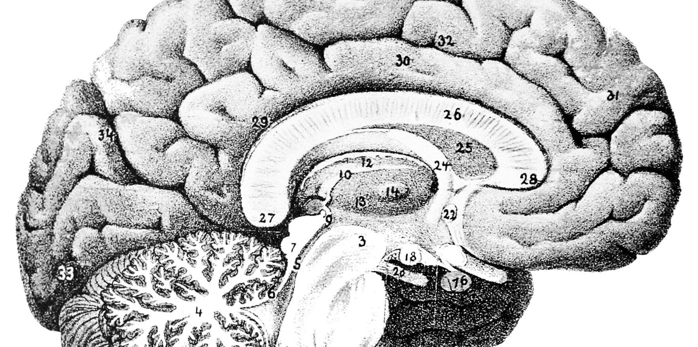

Research Assitant.
At the Whitney Laboratory for Perception and Action, I work under the supervision of Allison Yamanashi-Lieb designing and running experiments that look to better understand ensemble perception. Additionally, I volunteer in their internship program for highschool students that aims to teach skills one would need to thrive in a psychology research lab.
For five months, I was trained to use MatLab’s Psychtoolbox along with R to design and program experiments and run statistical analysis on the data we collected. By August of 2019, I will have run the entire experimental study.
In addition to the research I assist in, I also volunteer to help tutor and facilitate activities in the Whitney Lab’s pre-collegiate research program. For a few hours a day, I aid the students in developing an in-depth knowledge of MatLab’s potential uses for psychology research.